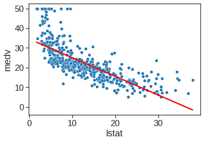
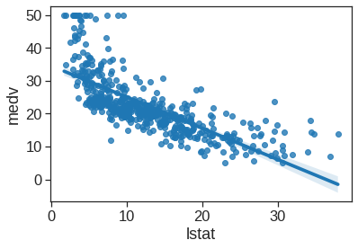
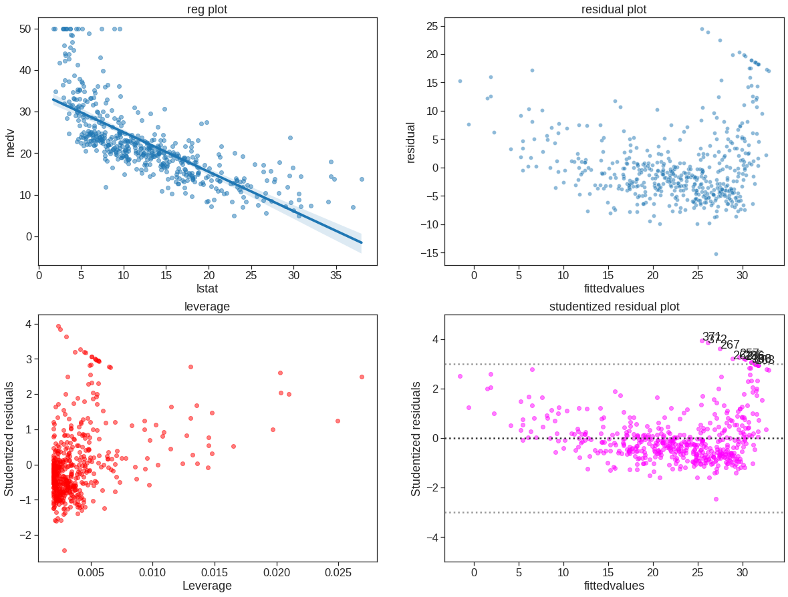
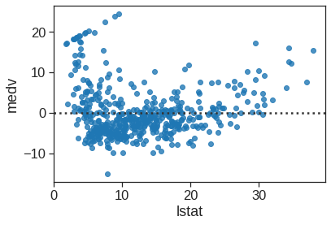
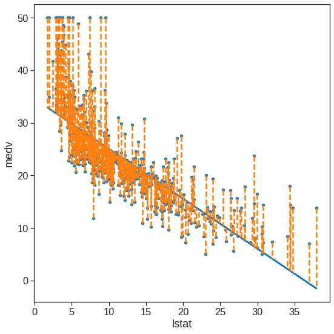
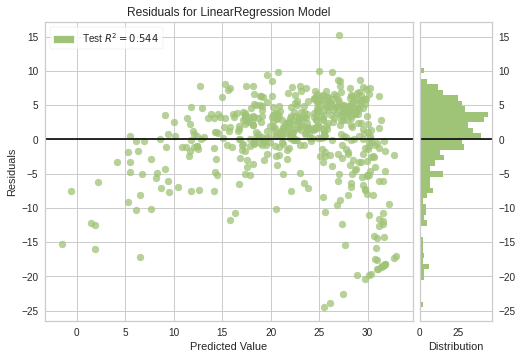

import pandas as pd
import numpy as np
# Modeling
from sklearn.metrics import mean_squared_error, explained_variance_score, r2_score
from sklearn import linear_model
from sklearn.preprocessing import PolynomialFeatures
import statsmodels.formula.api as smf
import statsmodels.api as sm
from statsmodels.sandbox.regression.predstd import wls_prediction_std
from statsmodels.stats.outliers_influence import OLSInfluence
from statsmodels.graphics.regressionplots import *
from statsmodels.stats.outliers_influence import variance_inflation_factor as vif
from scipy import stats
import matplotlib.pyplot as plt
import seaborn as sns
%matplotlib inline
plt.style.use('seaborn-white')
sns.set_context("notebook", font_scale=1.5, rc={"lines.linewidth": 2.5})3 Regression
|
|

|
3.1 Simple Linear Regression
The ISLR2 contains the Boston data set, which records medv (median house value) for \(506\) census tracts in Boston. We will seek to predict medv using \(12\) predictors such as rmvar (average number of rooms per house), age (average age of houses), and lstat (percent of households with low socioeconomic status).
# temp fix from https://nbviewer.jupyter.org/gist/thatneat/10286720
def transform_exog_to_model(fit, exog):
transform=True
self=fit
# The following is lifted straight from statsmodels.base.model.Results.predict()
if transform and hasattr(self.model, 'formula') and exog is not None:
from patsy import dmatrix
exog = dmatrix(self.model.data.orig_exog.design_info.builder,
exog)
if exog is not None:
exog = np.asarray(exog)
if exog.ndim == 1 and (self.model.exog.ndim == 1 or
self.model.exog.shape[1] == 1):
exog = exog[:, None]
exog = np.atleast_2d(exog) # needed in count model shape[1]
# end lifted code
return exogBoston = pd.read_csv("/content/drive/MyDrive/Lab/Data/Boston.csv", index_col='Unnamed: 0')
Boston.index = Boston.index - 1
Boston.head()| crim | zn | indus | chas | nox | rm | age | dis | rad | tax | ptratio | lstat | medv | |
|---|---|---|---|---|---|---|---|---|---|---|---|---|---|
| 0 | 0.00632 | 18.0 | 2.31 | 0 | 0.538 | 6.575 | 65.2 | 4.0900 | 1 | 296 | 15.3 | 4.98 | 24.0 |
| 1 | 0.02731 | 0.0 | 7.07 | 0 | 0.469 | 6.421 | 78.9 | 4.9671 | 2 | 242 | 17.8 | 9.14 | 21.6 |
| 2 | 0.02729 | 0.0 | 7.07 | 0 | 0.469 | 7.185 | 61.1 | 4.9671 | 2 | 242 | 17.8 | 4.03 | 34.7 |
| 3 | 0.03237 | 0.0 | 2.18 | 0 | 0.458 | 6.998 | 45.8 | 6.0622 | 3 | 222 | 18.7 | 2.94 | 33.4 |
| 4 | 0.06905 | 0.0 | 2.18 | 0 | 0.458 | 7.147 | 54.2 | 6.0622 | 3 | 222 | 18.7 | 5.33 | 36.2 |
(506, 13)
<class 'pandas.core.frame.DataFrame'>
Int64Index: 506 entries, 0 to 505
Data columns (total 13 columns):
# Column Non-Null Count Dtype
--- ------ -------------- -----
0 crim 506 non-null float64
1 zn 506 non-null float64
2 indus 506 non-null float64
3 chas 506 non-null int64
4 nox 506 non-null float64
5 rm 506 non-null float64
6 age 506 non-null float64
7 dis 506 non-null float64
8 rad 506 non-null int64
9 tax 506 non-null int64
10 ptratio 506 non-null float64
11 lstat 506 non-null float64
12 medv 506 non-null float64
dtypes: float64(10), int64(3)
memory usage: 55.3 KB
NoneWe will start by using the ols() function to fit a simple linear regression model, with medv as the response and lstat as the predictor.
The basic syntax is \(ols(y \sim x, data)\), where y is the response, x is the predictor, and data is the data set in which these two variables are kept.
OLS Regression Results
==============================================================================
Dep. Variable: medv R-squared: 0.544
Model: OLS Adj. R-squared: 0.543
Method: Least Squares F-statistic: 601.6
Date: Sun, 25 Sep 2022 Prob (F-statistic): 5.08e-88
Time: 08:44:49 Log-Likelihood: -1641.5
No. Observations: 506 AIC: 3287.
Df Residuals: 504 BIC: 3295.
Df Model: 1
Covariance Type: nonrobust
==============================================================================
coef std err t P>|t| [0.025 0.975]
------------------------------------------------------------------------------
Intercept 34.5538 0.563 61.415 0.000 33.448 35.659
lstat -0.9500 0.039 -24.528 0.000 -1.026 -0.874
==============================================================================
Omnibus: 137.043 Durbin-Watson: 0.892
Prob(Omnibus): 0.000 Jarque-Bera (JB): 291.373
Skew: 1.453 Prob(JB): 5.36e-64
Kurtosis: 5.319 Cond. No. 29.7
==============================================================================
Notes:
[1] Standard Errors assume that the covariance matrix of the errors is correctly specified.Another way is to use scikit-learn like API as follows:
X = Boston["lstat"]
X = sm.add_constant(X)
y = Boston["medv"]
model = sm.OLS(y,X).fit()
print(model.summary()) OLS Regression Results
==============================================================================
Dep. Variable: medv R-squared: 0.544
Model: OLS Adj. R-squared: 0.543
Method: Least Squares F-statistic: 601.6
Date: Sun, 25 Sep 2022 Prob (F-statistic): 5.08e-88
Time: 08:44:49 Log-Likelihood: -1641.5
No. Observations: 506 AIC: 3287.
Df Residuals: 504 BIC: 3295.
Df Model: 1
Covariance Type: nonrobust
==============================================================================
coef std err t P>|t| [0.025 0.975]
------------------------------------------------------------------------------
const 34.5538 0.563 61.415 0.000 33.448 35.659
lstat -0.9500 0.039 -24.528 0.000 -1.026 -0.874
==============================================================================
Omnibus: 137.043 Durbin-Watson: 0.892
Prob(Omnibus): 0.000 Jarque-Bera (JB): 291.373
Skew: 1.453 Prob(JB): 5.36e-64
Kurtosis: 5.319 Cond. No. 29.7
==============================================================================
Notes:
[1] Standard Errors assume that the covariance matrix of the errors is correctly specified./usr/local/lib/python3.7/dist-packages/statsmodels/tsa/tsatools.py:142: FutureWarning: In a future version of pandas all arguments of concat except for the argument 'objs' will be keyword-only
x = pd.concat(x[::order], 1)When statsmodel detected as a categorical variable, and thus each of its different values are treated as different entities. An integer column can be forced to be treated as categorical using: model = ols('VIQ ~ C(Gender)', data).fit() By default, statsmodels treats a categorical variable with K possible values as K-1 ‘dummy’ boolean variables (the last level being absorbed into the intercept term). This is almost always a good default choice - however, it is possible to specify different encodings for categorical variables (http://statsmodels.sourceforge.net/devel/contrasts.html).
In order to obtain a confidence interval for the coefficient estimates, we can use the conf_int() command.
| 0 | 1 | |
|---|---|---|
| Intercept | 33.448457 | 35.659225 |
| lstat | -1.026148 | -0.873951 |
The predict() function can be used to produce the prediction for new instance.
0 29.803594
1 25.053347
2 20.303101
dtype: float64# prediction interval: _, lower bound, upper bound
transformed = transform_exog_to_model(est, X_new)
wls_prediction_std(est, transformed , weights=[1])[1:]/usr/local/lib/python3.7/dist-packages/ipykernel_launcher.py:9: DeprecationWarning: The DesignInfo.builder attribute is deprecated starting in patsy v0.4.0; distinct builder objects have been eliminated and design_info.builder is now just a long-winded way of writing 'design_info' (i.e. the .builder attribute just returns self)
if __name__ == '__main__':(array([17.56567478, 12.82762635, 8.0777421 ]),
array([42.04151344, 37.27906833, 32.52845905]))The get_prediction() function can be used to produce confidence intervals and prediction intervals for the prediction of medv for a given value of lstat.
| mean | mean_se | mean_ci_lower | mean_ci_upper | obs_ci_lower | obs_ci_upper | |
|---|---|---|---|---|---|---|
| 0 | 29.803594 | 0.405247 | 29.007412 | 30.599776 | 17.565675 | 42.041513 |
| 1 | 25.053347 | 0.294814 | 24.474132 | 25.632563 | 12.827626 | 37.279068 |
| 2 | 20.303101 | 0.290893 | 19.731588 | 20.874613 | 8.077742 | 32.528459 |
For instance, the 95,% confidence interval associated with a lstat value of 10 is \((24.47, 25.63)\), and the 95,% prediction interval is \((12.828, 37.28)\). As expected, the confidence and prediction intervals are centered around the same point (a predicted value of \(25.05\) for medv when lstat equals 10), but the latter are substantially wider.
We will now plot medv and lstat along with the least squares regression line using matplotlib or regplot() functions.
sns.scatterplot(x='lstat', y='medv', data=Boston)
X = pd.DataFrame({'lstat':[Boston.lstat.min(), Boston.lstat.max()]})
Y_pred = est.predict(X)
sns.lineplot(x=X.values[:,0], y=Y_pred.values, color='red')
plt.xlabel("lstat")
plt.ylabel("medv")Text(0, 0.5, 'medv')
<matplotlib.axes._subplots.AxesSubplot at 0x7f67f36559d0>
Next we examine some diagnostic plots, several of which were discussed in Section 3.3.3. Four diagnostic plots are plotted according to the results from ols(). Also check https://www.statsmodels.org/stable/generated/statsmodels.stats.outliers_influence.OLSInfluence.html and https://www.statsmodels.org/stable/generated/statsmodels.regression.linear_model.OLSResults.html#statsmodels.regression.linear_model.OLSResults
infulence = OLSInfluence(est)
ols_sm_resid = est.resid # residuals
ols_fitted = est.fittedvalues
ols_sm_resid_stud = infulence.resid_studentized_internal
leverage = OLSInfluence(est).hat_matrix_diag
f, axes = plt.subplots(2, 2, sharex=False, sharey=False)
f.set_figheight(15)
f.set_figwidth(20)
sns.regplot(x='lstat', y='medv', data=Boston, ax=axes[0, 0], scatter_kws={'alpha': 0.5}) # regression plot
axes[0, 0].set_title("reg plot")
sns.scatterplot(x=ols_fitted,y=ols_sm_resid, ax=axes[0, 1], alpha=0.5)
axes[0, 1].set_xlabel("fittedvalues")
axes[0, 1].set_ylabel("residual")
axes[0, 1].set_title("residual plot")
#sns.residplot(x=est.predict(), y='medv', data=df, ax=axes[0, 1], scatter_kws={'alpha': '0.5'}) # residual plot
#plot_leverage_resid2(ols_sm_results, ax=axes[1, 0], color='red') # leverage plot
# custom leverage plot instead of above
#axes[1, 0].autoscale(enable=True, axis='y', tight=True)
axes[1, 0].scatter(leverage, ols_sm_resid_stud, alpha=0.5, color='red')
axes[1, 0].set_xlabel("Leverage")
axes[1, 0].set_ylabel("Studentized residuals")
#axes[1, 0].set_ylim(-5, 5)
axes[1, 0].set_title("leverage")
# studentized residual plot
axes[1, 1].scatter(ols_fitted, ols_sm_resid_stud, alpha=0.5, color='magenta')
axes[1, 1].axhline(0, ls=":", c=".2")
axes[1, 1].axhline(-3, ls=":", c=".6")
axes[1, 1].axhline(3, ls=":", c=".6")
axes[1, 1].set_ylim(-5, 5)
axes[1, 1].set_xlabel("fittedvalues")
axes[1, 1].set_ylabel("Studentized residuals")
axes[1, 1].set_title("studentized residual plot")
x = est.fittedvalues[np.logical_or(ols_sm_resid_stud > 3, ols_sm_resid_stud < -3)]
y = ols_sm_resid_stud[np.logical_or(ols_sm_resid_stud > 3, ols_sm_resid_stud < -3)]
for i, x, y in zip(x.index, x, y):
axes[1, 1].annotate(i, xy=(x, y));
3.1.1 Optional - Other useful plot
Seaborn also has the functionality of residual plot
<matplotlib.axes._subplots.AxesSubplot at 0x7f67f07b7890>
Statsmodel has more diagonostic plot, like the influence plot where the size of the points is relate to Cook’s distance. https://www.statsmodels.org/stable/examples/notebooks/generated/regression_plots.html
The plot_regress_exog function is a convenience function that gives a 2x2 plot containing the dependent variable and fitted values with confidence intervals vs. the independent variable chosen, the residuals of the model vs. the chosen independent variable, a partial regression plot, and a CCPR plot. This function can be used for quickly checking modeling assumptions with respect to a single regressor. Check https://www.statsmodels.org/stable/examples/notebooks/generated/regression_plots.html#Component-Component-plus-Residual-(CCPR)-Plots
3.2 Multiple Regression
In order to fit a multiple linear regression model using least squares, we again use the ols() function. The syntax \(ols(y \sim x1 + x2 + x3)\) is used to fit a model with three predictors, x1, x2, and x3. The summary() function now outputs the regression coefficients for all the predictors.
#string_cols = ' + '.join(data.columns[:-1])
est = smf.ols('medv ~ lstat+age',data = Boston).fit()
print(est.summary()) OLS Regression Results
==============================================================================
Dep. Variable: medv R-squared: 0.551
Model: OLS Adj. R-squared: 0.549
Method: Least Squares F-statistic: 309.0
Date: Sun, 25 Sep 2022 Prob (F-statistic): 2.98e-88
Time: 08:44:53 Log-Likelihood: -1637.5
No. Observations: 506 AIC: 3281.
Df Residuals: 503 BIC: 3294.
Df Model: 2
Covariance Type: nonrobust
==============================================================================
coef std err t P>|t| [0.025 0.975]
------------------------------------------------------------------------------
Intercept 33.2228 0.731 45.458 0.000 31.787 34.659
lstat -1.0321 0.048 -21.416 0.000 -1.127 -0.937
age 0.0345 0.012 2.826 0.005 0.011 0.059
==============================================================================
Omnibus: 124.288 Durbin-Watson: 0.945
Prob(Omnibus): 0.000 Jarque-Bera (JB): 244.026
Skew: 1.362 Prob(JB): 1.02e-53
Kurtosis: 5.038 Cond. No. 201.
==============================================================================
Notes:
[1] Standard Errors assume that the covariance matrix of the errors is correctly specified.The Boston data set contains 12 variables, and so it would be cumbersome to have to type all of these in order to perform a regression using all of the predictors. Instead, we can use the code:
columns_selected = "+".join(Boston.columns.difference(["medv"]))
my_formula = "medv ~ " + columns_selected
est = smf.ols(my_formula,data = Boston).fit()
print(est.summary()) OLS Regression Results
==============================================================================
Dep. Variable: medv R-squared: 0.734
Model: OLS Adj. R-squared: 0.728
Method: Least Squares F-statistic: 113.5
Date: Sun, 25 Sep 2022 Prob (F-statistic): 2.23e-133
Time: 08:44:53 Log-Likelihood: -1504.9
No. Observations: 506 AIC: 3036.
Df Residuals: 493 BIC: 3091.
Df Model: 12
Covariance Type: nonrobust
==============================================================================
coef std err t P>|t| [0.025 0.975]
------------------------------------------------------------------------------
Intercept 41.6173 4.936 8.431 0.000 31.919 51.316
age 0.0036 0.013 0.271 0.787 -0.023 0.030
chas 2.8400 0.870 3.264 0.001 1.131 4.549
crim -0.1214 0.033 -3.678 0.000 -0.186 -0.057
dis -1.4908 0.202 -7.394 0.000 -1.887 -1.095
indus 0.0135 0.062 0.217 0.829 -0.109 0.136
lstat -0.5520 0.051 -10.897 0.000 -0.652 -0.452
nox -18.7580 3.851 -4.870 0.000 -26.325 -11.191
ptratio -0.9375 0.132 -7.091 0.000 -1.197 -0.678
rad 0.2894 0.067 4.325 0.000 0.158 0.421
rm 3.6581 0.420 8.705 0.000 2.832 4.484
tax -0.0127 0.004 -3.337 0.001 -0.020 -0.005
zn 0.0470 0.014 3.384 0.001 0.020 0.074
==============================================================================
Omnibus: 171.096 Durbin-Watson: 1.077
Prob(Omnibus): 0.000 Jarque-Bera (JB): 709.937
Skew: 1.477 Prob(JB): 6.90e-155
Kurtosis: 7.995 Cond. No. 1.17e+04
==============================================================================
Notes:
[1] Standard Errors assume that the covariance matrix of the errors is correctly specified.
[2] The condition number is large, 1.17e+04. This might indicate that there are
strong multicollinearity or other numerical problems.We can access the individual components of a summary object by name. Hence est.rsquared gives us the \(R^2\). The vif() function can be used to compute variance inflation factors. Most VIF’s are low to moderate for this data. Check https://www.statsmodels.org/stable/generated/statsmodels.stats.outliers_influence.variance_inflation_factor.html
# don't forget to add constant if the ols model includes intercept
boston = Boston.drop('medv', axis=1).assign(const=1)
boston.head()| crim | zn | indus | chas | nox | rm | age | dis | rad | tax | ptratio | lstat | const | |
|---|---|---|---|---|---|---|---|---|---|---|---|---|---|
| 0 | 0.00632 | 18.0 | 2.31 | 0 | 0.538 | 6.575 | 65.2 | 4.0900 | 1 | 296 | 15.3 | 4.98 | 1 |
| 1 | 0.02731 | 0.0 | 7.07 | 0 | 0.469 | 6.421 | 78.9 | 4.9671 | 2 | 242 | 17.8 | 9.14 | 1 |
| 2 | 0.02729 | 0.0 | 7.07 | 0 | 0.469 | 7.185 | 61.1 | 4.9671 | 2 | 242 | 17.8 | 4.03 | 1 |
| 3 | 0.03237 | 0.0 | 2.18 | 0 | 0.458 | 6.998 | 45.8 | 6.0622 | 3 | 222 | 18.7 | 2.94 | 1 |
| 4 | 0.06905 | 0.0 | 2.18 | 0 | 0.458 | 7.147 | 54.2 | 6.0622 | 3 | 222 | 18.7 | 5.33 | 1 |
# variance inflation factors
for i, col in enumerate(boston.columns):
if col == 'const':
pass
elif len(col) > 6:
print(col, ':', "{0:.2f}".format(vif(boston.to_numpy(), i)))
else:
print(col, '\t:', "{0:.2f}".format(vif(boston.to_numpy(), i)))crim : 1.77
zn : 2.30
indus : 3.99
chas : 1.07
nox : 4.37
rm : 1.91
age : 3.09
dis : 3.95
rad : 7.45
tax : 9.00
ptratio : 1.80
lstat : 2.87What if we would like to perform a regression using all of the variables but one? For example, in the above regression output, age has a high \(p\)-value. So we may wish to run a regression excluding this predictor. The following procedure results in a regression using all predictors except age.
columns_selected = "+".join(Boston.columns.difference(["medv", "age"]))
my_formula = "medv ~ " + columns_selected
lm_fit1 = smf.ols(formula = my_formula, data=Boston).fit()
lm_fit1.summary().tables[1]| coef | std err | t | P>|t| | [0.025 | 0.975] | |
| Intercept | 41.5251 | 4.920 | 8.441 | 0.000 | 31.859 | 51.191 |
| chas | 2.8528 | 0.868 | 3.287 | 0.001 | 1.148 | 4.558 |
| crim | -0.1214 | 0.033 | -3.683 | 0.000 | -0.186 | -0.057 |
| dis | -1.5068 | 0.193 | -7.825 | 0.000 | -1.885 | -1.128 |
| indus | 0.0135 | 0.062 | 0.217 | 0.829 | -0.109 | 0.135 |
| lstat | -0.5474 | 0.048 | -11.483 | 0.000 | -0.641 | -0.454 |
| nox | -18.4851 | 3.714 | -4.978 | 0.000 | -25.782 | -11.188 |
| ptratio | -0.9346 | 0.132 | -7.099 | 0.000 | -1.193 | -0.676 |
| rad | 0.2879 | 0.067 | 4.322 | 0.000 | 0.157 | 0.419 |
| rm | 3.6811 | 0.411 | 8.951 | 0.000 | 2.873 | 4.489 |
| tax | -0.0127 | 0.004 | -3.333 | 0.001 | -0.020 | -0.005 |
| zn | 0.0465 | 0.014 | 3.379 | 0.001 | 0.019 | 0.074 |
3.3 Interaction term
It is easy to include interaction terms in a linear model using the ols() function. The syntax lstat:age tells Python to include an interaction term between lstat and age. The syntax lstat * age simultaneously includes lstat, age, and the interaction term lstat\(\times\)age as predictors; it is a shorthand for lstat + age + lstat:age.
OLS Regression Results
==============================================================================
Dep. Variable: medv R-squared: 0.556
Model: OLS Adj. R-squared: 0.553
Method: Least Squares F-statistic: 209.3
Date: Sun, 25 Sep 2022 Prob (F-statistic): 4.86e-88
Time: 08:44:54 Log-Likelihood: -1635.0
No. Observations: 506 AIC: 3278.
Df Residuals: 502 BIC: 3295.
Df Model: 3
Covariance Type: nonrobust
==============================================================================
coef std err t P>|t| [0.025 0.975]
------------------------------------------------------------------------------
Intercept 36.0885 1.470 24.553 0.000 33.201 38.976
lstat -1.3921 0.167 -8.313 0.000 -1.721 -1.063
age -0.0007 0.020 -0.036 0.971 -0.040 0.038
lstat:age 0.0042 0.002 2.244 0.025 0.001 0.008
==============================================================================
Omnibus: 135.601 Durbin-Watson: 0.965
Prob(Omnibus): 0.000 Jarque-Bera (JB): 296.955
Skew: 1.417 Prob(JB): 3.29e-65
Kurtosis: 5.461 Cond. No. 6.88e+03
==============================================================================
Notes:
[1] Standard Errors assume that the covariance matrix of the errors is correctly specified.
[2] The condition number is large, 6.88e+03. This might indicate that there are
strong multicollinearity or other numerical problems.3.4 Non-linear Transformations of the Predictors
The ols() function can also accommodate non-linear transformations of the predictors. For instance, given a predictor \(X\), we can create a predictor \(X^2\) using I(X**2). The function I() is needed since the ** has a special meaning in a formula object. We now perform a regression of medv onto lstat and lstat^2.
#adding power term
est = smf.ols('medv ~ lstat + I(lstat**2)',data = Boston).fit()
print(est.summary()) OLS Regression Results
==============================================================================
Dep. Variable: medv R-squared: 0.641
Model: OLS Adj. R-squared: 0.639
Method: Least Squares F-statistic: 448.5
Date: Sun, 25 Sep 2022 Prob (F-statistic): 1.56e-112
Time: 08:44:54 Log-Likelihood: -1581.3
No. Observations: 506 AIC: 3169.
Df Residuals: 503 BIC: 3181.
Df Model: 2
Covariance Type: nonrobust
=================================================================================
coef std err t P>|t| [0.025 0.975]
---------------------------------------------------------------------------------
Intercept 42.8620 0.872 49.149 0.000 41.149 44.575
lstat -2.3328 0.124 -18.843 0.000 -2.576 -2.090
I(lstat ** 2) 0.0435 0.004 11.628 0.000 0.036 0.051
==============================================================================
Omnibus: 107.006 Durbin-Watson: 0.921
Prob(Omnibus): 0.000 Jarque-Bera (JB): 228.388
Skew: 1.128 Prob(JB): 2.55e-50
Kurtosis: 5.397 Cond. No. 1.13e+03
==============================================================================
Notes:
[1] Standard Errors assume that the covariance matrix of the errors is correctly specified.
[2] The condition number is large, 1.13e+03. This might indicate that there are
strong multicollinearity or other numerical problems.The near-zero \(p\)-value associated with the quadratic term suggests that it leads to an improved model. We use the anova() function to further quantify the extent to which the quadratic fit is superior to the linear fit.
| df_resid | ssr | df_diff | ss_diff | F | Pr(>F) | |
|---|---|---|---|---|---|---|
| 0 | 504.0 | 19472.381418 | 0.0 | NaN | NaN | NaN |
| 1 | 503.0 | 15347.243158 | 1.0 | 4125.13826 | 135.199822 | 7.630116e-28 |
Here Model 0 represents the linear submodel containing only one predictor, lstat, while Model 1 corresponds to the larger quadratic model that has two predictors, lstat and lstat^2. The anova() function performs a hypothesis test comparing the two models. The null hypothesis is that the two models fit the data equally well, and the alternative hypothesis is that the full model is superior. Here the \(F\)-statistic is \(135\) and the associated \(p\)-value is virtually zero. This provides very clear evidence that the model containing the predictors lstat and lstat^2 is far superior to the model that only contains the predictor lstat. This is not surprising, since earlier we saw evidence for non-linearity in the relationship between medv and lstat. If we type
In order to create a cubic fit, we can include a predictor of the form I(X**3). However, this approach can start to get cumbersome for higher-order polynomials. A better approach involves using the PolynomialFeatures() function to create the polynomial within ols(). For example, the following command produces a fifth-order polynomial fit:
ols_smf = smf.ols(formula='medv ~ xp', data=Boston)
ols_smf_results = ols_smf.fit()
print(ols_smf_results.summary()) OLS Regression Results
==============================================================================
Dep. Variable: medv R-squared: 0.682
Model: OLS Adj. R-squared: 0.679
Method: Least Squares F-statistic: 214.2
Date: Sun, 25 Sep 2022 Prob (F-statistic): 8.73e-122
Time: 08:44:54 Log-Likelihood: -1550.6
No. Observations: 506 AIC: 3113.
Df Residuals: 500 BIC: 3139.
Df Model: 5
Covariance Type: nonrobust
==============================================================================
coef std err t P>|t| [0.025 0.975]
------------------------------------------------------------------------------
Intercept 67.6997 3.604 18.783 0.000 60.618 74.781
xp[0] -11.9911 1.526 -7.859 0.000 -14.989 -8.994
xp[1] 1.2728 0.223 5.703 0.000 0.834 1.711
xp[2] -0.0683 0.014 -4.747 0.000 -0.097 -0.040
xp[3] 0.0017 0.000 4.143 0.000 0.001 0.003
xp[4] -1.632e-05 4.42e-06 -3.692 0.000 -2.5e-05 -7.63e-06
==============================================================================
Omnibus: 144.085 Durbin-Watson: 0.987
Prob(Omnibus): 0.000 Jarque-Bera (JB): 494.545
Skew: 1.292 Prob(JB): 4.08e-108
Kurtosis: 7.096 Cond. No. 1.37e+08
==============================================================================
Notes:
[1] Standard Errors assume that the covariance matrix of the errors is correctly specified.
[2] The condition number is large, 1.37e+08. This might indicate that there are
strong multicollinearity or other numerical problems.This suggests that including additional polynomial terms, up to fifth order, leads to an improvement in the model fit! However, further investigation of the data reveals that no polynomial terms beyond fifth order have significant \(p\)-values in a regression fit.
Of course, we are in no way restricted to using polynomial transformations of the predictors. Here we try a log transformation.
# polynomial ols model with intercept
ols_smf = smf.ols(formula='medv ~ np.log(rm)', data=Boston)
# fitted model and summary
ols_smf_results = ols_smf.fit()
print(ols_smf_results.summary()) OLS Regression Results
==============================================================================
Dep. Variable: medv R-squared: 0.436
Model: OLS Adj. R-squared: 0.435
Method: Least Squares F-statistic: 389.3
Date: Sun, 25 Sep 2022 Prob (F-statistic): 1.22e-64
Time: 08:44:54 Log-Likelihood: -1695.4
No. Observations: 506 AIC: 3395.
Df Residuals: 504 BIC: 3403.
Df Model: 1
Covariance Type: nonrobust
==============================================================================
coef std err t P>|t| [0.025 0.975]
------------------------------------------------------------------------------
Intercept -76.4878 5.028 -15.213 0.000 -86.366 -66.610
np.log(rm) 54.0546 2.739 19.732 0.000 48.672 59.437
==============================================================================
Omnibus: 117.102 Durbin-Watson: 0.681
Prob(Omnibus): 0.000 Jarque-Bera (JB): 584.336
Skew: 0.916 Prob(JB): 1.30e-127
Kurtosis: 7.936 Cond. No. 38.9
==============================================================================
Notes:
[1] Standard Errors assume that the covariance matrix of the errors is correctly specified.3.5 Qualitative predictors
We will now examine the Carseats data, which is part of the ISLR2. We will attempt to predict Sales(child car seat sales) in \(400\) locations based on a number of predictors.
Carseats = pd.read_csv("/content/drive/MyDrive/Lab/Data/Carseats.csv")
print(Carseats.shape)
Carseats.head()(400, 11)| Sales | CompPrice | Income | Advertising | Population | Price | ShelveLoc | Age | Education | Urban | US | |
|---|---|---|---|---|---|---|---|---|---|---|---|
| 0 | 9.50 | 138 | 73 | 11 | 276 | 120 | Bad | 42 | 17 | Yes | Yes |
| 1 | 11.22 | 111 | 48 | 16 | 260 | 83 | Good | 65 | 10 | Yes | Yes |
| 2 | 10.06 | 113 | 35 | 10 | 269 | 80 | Medium | 59 | 12 | Yes | Yes |
| 3 | 7.40 | 117 | 100 | 4 | 466 | 97 | Medium | 55 | 14 | Yes | Yes |
| 4 | 4.15 | 141 | 64 | 3 | 340 | 128 | Bad | 38 | 13 | Yes | No |
The Carseats data includes qualitative predictors such as shelveloc, an indicator of the quality of the shelving location—that is, the space within a store in which the car seat is displayed—at each location. The predictor shelveloc takes on three possible values: Bad, Medium, and Good. Given a qualitative variable such as shelveloc, Python generates dummy variables automatically. Below we fit a multiple regression model that includes some interaction terms. The syntax X1:XP tells Python to include an interaction term between X1 and XP.
# ols model with intercept
columns_selected = "+".join(Carseats.columns.difference(["Sales"]))
my_formula = "Sales ~ Income:Advertising + Price:Age + " + columns_selected
# fitted model and summary
lm_fit = smf.ols(my_formula, data=Carseats).fit()
print(lm_fit.summary()) OLS Regression Results
==============================================================================
Dep. Variable: Sales R-squared: 0.876
Model: OLS Adj. R-squared: 0.872
Method: Least Squares F-statistic: 210.0
Date: Sun, 25 Sep 2022 Prob (F-statistic): 6.14e-166
Time: 08:44:54 Log-Likelihood: -564.67
No. Observations: 400 AIC: 1157.
Df Residuals: 386 BIC: 1213.
Df Model: 13
Covariance Type: nonrobust
=======================================================================================
coef std err t P>|t| [0.025 0.975]
---------------------------------------------------------------------------------------
Intercept 6.5756 1.009 6.519 0.000 4.592 8.559
ShelveLoc[T.Good] 4.8487 0.153 31.724 0.000 4.548 5.149
ShelveLoc[T.Medium] 1.9533 0.126 15.531 0.000 1.706 2.201
US[T.Yes] -0.1576 0.149 -1.058 0.291 -0.450 0.135
Urban[T.Yes] 0.1402 0.112 1.247 0.213 -0.081 0.361
Income:Advertising 0.0008 0.000 2.698 0.007 0.000 0.001
Price:Age 0.0001 0.000 0.801 0.424 -0.000 0.000
Advertising 0.0702 0.023 3.107 0.002 0.026 0.115
Age -0.0579 0.016 -3.633 0.000 -0.089 -0.027
CompPrice 0.0929 0.004 22.567 0.000 0.085 0.101
Education -0.0209 0.020 -1.063 0.288 -0.059 0.018
Income 0.0109 0.003 4.183 0.000 0.006 0.016
Population 0.0002 0.000 0.433 0.665 -0.001 0.001
Price -0.1008 0.007 -13.549 0.000 -0.115 -0.086
==============================================================================
Omnibus: 1.281 Durbin-Watson: 2.047
Prob(Omnibus): 0.527 Jarque-Bera (JB): 1.147
Skew: 0.129 Prob(JB): 0.564
Kurtosis: 3.050 Cond. No. 1.31e+05
==============================================================================
Notes:
[1] Standard Errors assume that the covariance matrix of the errors is correctly specified.
[2] The condition number is large, 1.31e+05. This might indicate that there are
strong multicollinearity or other numerical problems.Python has created a ShelveLoc[T.Good] dummy variable that takes on a value of 1 if the shelving location is good, and 0 otherwise. It has also created a ShelveLoc[T.Medium] dummy variable that equals 1 if the shelving location is medium, and 0 otherwise. A bad shelving location corresponds to a zero for each of the two dummy variables. The fact that the coefficient for ShelveLoc[T.Good] in the regression output is positive indicates that a good shelving location is associated with high sales (relative to a bad location). And ShelveLoc[T.Medium] has a smaller positive coefficient, indicating that a medium shelving location is associated with higher sales than a bad shelving location but lower sales than a good shelving location.
Also check pd.get_dummies.
3.6 The sklearn is another popular way for performing OLS in Python
Check sklearn https://scikit-learn.org/stable/modules/linear_model.html.
# ols model with intercept
ols_sl = linear_model.LinearRegression(fit_intercept=True)
# fitted ols model (.values.reshape(-1, 1) is required for single predictor?)
x_train = Boston.lstat.values.reshape(-1, 1)
y_true = Boston.medv
ols_sl.fit(x_train, y_true)
y_pred = ols_sl.predict(x_train)
# summary
ols_sl.intercept_, ols_sl.coef_(34.5538408793831, array([-0.95004935]))ax = Boston.plot.scatter(x='lstat', y='medv', figsize=(8, 8))
ax.plot(Boston.lstat, y_pred)
for x, yactual, yfitted in zip(Boston.lstat, Boston.medv, y_pred):
ax.plot((x, x), (yactual, yfitted), '--', color='C1')
plt.tight_layout()
plt.show()
ols_sl_summary = {'R2': r2_score(y_true, y_pred),
'Ex. Var': explained_variance_score(y_true, y_pred),
'MSE': mean_squared_error(y_true, y_pred)}
for k, v in ols_sl_summary.items():
print(k, ':', v)R2 : 0.5441462975864797
Ex. Var : 0.5441462975864798
MSE : 38.48296722989415array([29.80359411, 25.05334734, 20.30310057])3.6.1 Optional - Visualizer for sklearn
Sklearn do not come with statistical visulizer like seaborn but you can use yellowbrick
Looking in indexes: https://pypi.org/simple, https://us-python.pkg.dev/colab-wheels/public/simple/
Requirement already satisfied: yellowbrick in /usr/local/lib/python3.7/dist-packages (1.5)
Requirement already satisfied: matplotlib!=3.0.0,>=2.0.2 in /usr/local/lib/python3.7/dist-packages (from yellowbrick) (3.2.2)
Requirement already satisfied: scikit-learn>=1.0.0 in /usr/local/lib/python3.7/dist-packages (from yellowbrick) (1.0.2)
Requirement already satisfied: numpy>=1.16.0 in /usr/local/lib/python3.7/dist-packages (from yellowbrick) (1.21.6)
Requirement already satisfied: cycler>=0.10.0 in /usr/local/lib/python3.7/dist-packages (from yellowbrick) (0.11.0)
Requirement already satisfied: scipy>=1.0.0 in /usr/local/lib/python3.7/dist-packages (from yellowbrick) (1.7.3)
Requirement already satisfied: python-dateutil>=2.1 in /usr/local/lib/python3.7/dist-packages (from matplotlib!=3.0.0,>=2.0.2->yellowbrick) (2.8.2)
Requirement already satisfied: kiwisolver>=1.0.1 in /usr/local/lib/python3.7/dist-packages (from matplotlib!=3.0.0,>=2.0.2->yellowbrick) (1.4.4)
Requirement already satisfied: pyparsing!=2.0.4,!=2.1.2,!=2.1.6,>=2.0.1 in /usr/local/lib/python3.7/dist-packages (from matplotlib!=3.0.0,>=2.0.2->yellowbrick) (3.0.9)
Requirement already satisfied: typing-extensions in /usr/local/lib/python3.7/dist-packages (from kiwisolver>=1.0.1->matplotlib!=3.0.0,>=2.0.2->yellowbrick) (4.1.1)
Requirement already satisfied: six>=1.5 in /usr/local/lib/python3.7/dist-packages (from python-dateutil>=2.1->matplotlib!=3.0.0,>=2.0.2->yellowbrick) (1.15.0)
Requirement already satisfied: threadpoolctl>=2.0.0 in /usr/local/lib/python3.7/dist-packages (from scikit-learn>=1.0.0->yellowbrick) (3.1.0)
Requirement already satisfied: joblib>=0.11 in /usr/local/lib/python3.7/dist-packages (from scikit-learn>=1.0.0->yellowbrick) (1.1.0)model = linear_model.LinearRegression(fit_intercept=True)
visualizer = PredictionError(model)
visualizer.fit(x_train, y_true) # Fit the training data to the visualizer
visualizer.score(x_train, y_true)
visualizer.show()
<matplotlib.axes._subplots.AxesSubplot at 0x7f67eda44fd0>visualizer = ResidualsPlot(model, is_fitted=True)
visualizer.score(x_train, y_true) # Evaluate the model on the test data
visualizer.show() # Finalize and render the figure
<matplotlib.axes._subplots.AxesSubplot at 0x7f67eda1d090>Histogram can be replaced with a Q-Q plot, which is a common way to check that residuals are normally distributed. If the residuals are normally distributed, then their quantiles when plotted against quantiles of normal distribution should form a straight line.